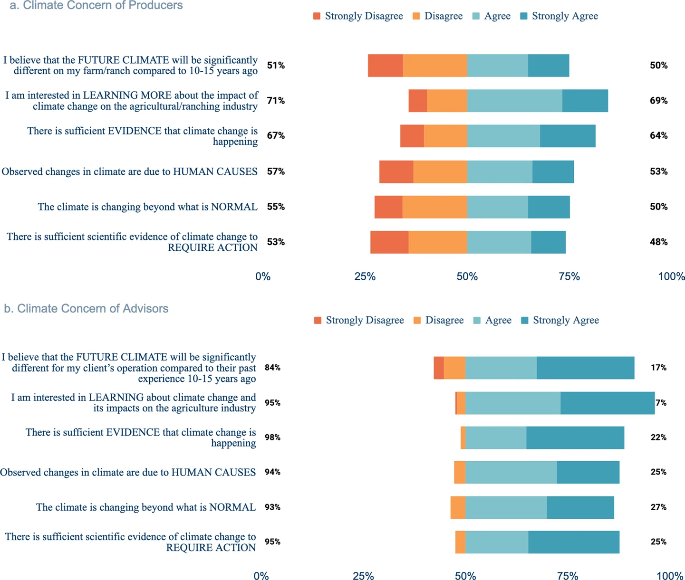
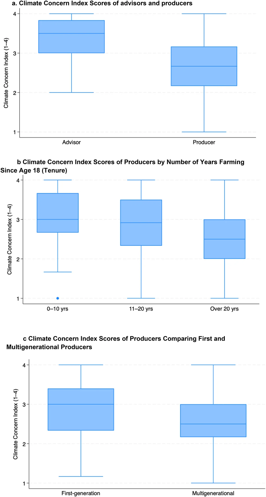

Study 4 of 4 · Use
Climate tools without climate consensus: weather and climate decision support tools create openings for agricultural adaptation
Climatic Change 179, 226 (2026) · Open access · doi.org/10.1007/s10584-026-04253-x
Better forecasts only matter if people use them. A statewide survey of 383 California farmers and ranchers and 121 agricultural advisors finds that belief in climate change does not predict whether producers use weather and climate decision tools. Practical fit does. Tools can serve people who disagree about climate change, as long as they help with decisions they already make.
p = 0.42
No significant relationship between the Climate Concern Index and tool use, after controlling for age, farm size, years farming and generational status.
45% · 37%
Producers and advisors currently using climate decision tools. The difference is not significant.
52% · 73%
Producers and advisors interested in a new online tool, a significant gap (p = 0.001) that points to unmet demand.
56% vs 24%
Producers who say they have enough information to manage climate risk, against advisors who think producers do.
Use and interest in decision tools
Share of respondents agreeing. Table 2 of the article.
Do producers have enough information?
Producers answered for themselves; advisors answered about producers in their area. Fig. 3 of the article.
The gap between producers and advisors is significant (z = −4.52, p < 0.001), and remains so against producers with higher concern (χ² = 6.59, p = 0.010).
What the survey shows
Concern shapes interest, not use
Climate concern correlates with seeing climate impacts on one's own operation (r = 0.62), with thinking tools would be helpful (0.44) and with interest in new tools (0.33). It barely correlates with actual use (0.14). Use appears to depend on a separate threshold: trust in the source, direct relevance, hands-on help and time to learn.
Advisors and producers also judge "enough information" by different standards. Producers draw on experience and local observation; advisors on scientific literacy and long-range planning. For some producers, being told they lack information dismisses the decisions they already make well.
The authors describe decision tools as boundary objects: shared instruments that people with different views can use toward common goals such as irrigation, risk reduction or variety selection, without first agreeing on what causes climate change.
Design priorities
How tools should be built
- Fit
Support decisions growers already make
Embed forecasts in tools already in use, such as on-farm weather stations, and match decision calendars.
- Learning
Show trends and past years
Comparisons with earlier seasons and shifting baselines let users build long-range understanding at their own pace.
- Uncertainty
Be open about uncertainty
Ranges tied to specific decisions are easier to trust than single projections.
- Language
Allow more than one framing
Offer both scientific and experiential language, and let users set their own thresholds.
- Advisors
Invest in trusted advisors
Advisors are more interested in tools and translate them into local terms. Training and co-design with them widens reach.

Figure 1" loading="lazy">
Figure 2" loading="lazy">What we did
Survey design
Three online surveys (farmers, ranchers, advisors) were developed with stakeholder input, reviewed by a 19-member expert panel, piloted with 18 stakeholders and offered in English and Spanish. They went to 12,932 producers and 424 advisors in spring 2023. After 31 fraud-detection checks and removal of incomplete responses, 383 producer and 121 advisor responses remained.
The Climate Concern Index averages six agreement items covering expected change, interest in learning, evidence, human causes, abnormal change and need for action (Cronbach's α = 0.90).
Limits and connection
What it means for this program
The survey was online and in two languages, so producers with limited internet access or who speak other languages are underrepresented, and tool use is self-reported.
For the outlooks in Studies 1–3, the lesson is to frame them around operational decisions, such as a drought trigger, a reservoir release window or a dormancy-treatment date, and to deliver them with Cooperative Extension advisors.
Cite
Pinzón, N., Velicogna, I., Roche, L. M., Cooper, M. H., Ikendi, S., Parker, L. E., Koundinya, V., Taku-Forchu, N., A, G. & Pathak, T. B. (2026). Climate tools without climate consensus: weather and climate decision support tools create openings for agricultural adaptation. Climatic Change, 179, 226. https://doi.org/10.1007/s10584-026-04253-x